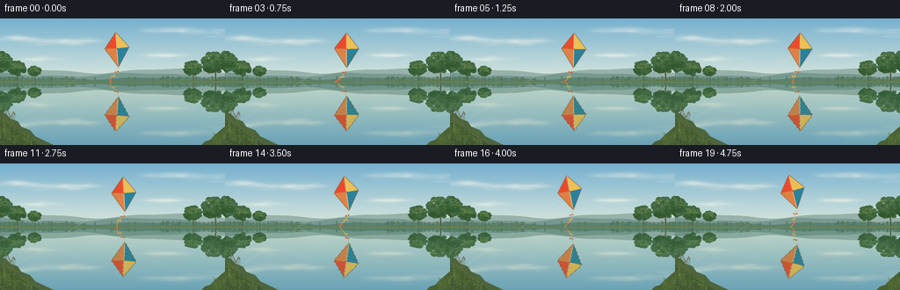
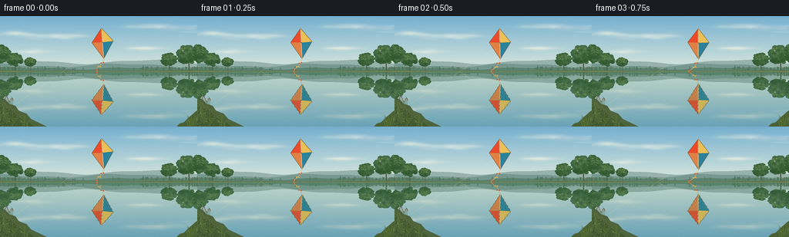
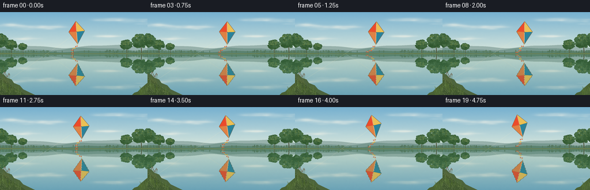
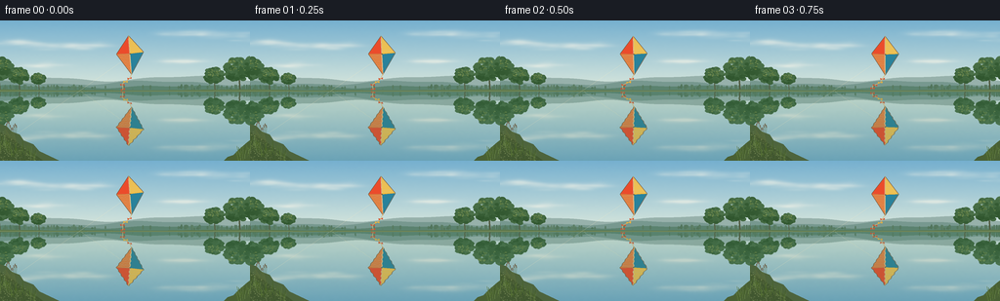

CODING AGENTS AS PIXEL WORLD MODELS
traex/GPT-6.1-Sol · phygen_057
点击播放 · 原生 RGB 像素
逐轮保存的候选
回放视频、检查图与代码变化。
每份候选均可单独播放。实际图片检查记录在下方工具轨迹中。
候选 01播放与检查图
点击播放 · 原生 RGB 像素


展开代码变化
--- 上一保存版本
+++ 本次保存版本
@@ -0,0 +1,221 @@
+from pathlib import Path
+import math
+import json
+import numpy as np
+from PIL import Image, ImageDraw, ImageFilter
+import artifact_io
+
+ROOT = Path(__file__).resolve().parent
+SPEC = json.loads((ROOT / 'task_spec.json').read_text())
+W, H = SPEC['width'], SPEC['height']
+S = 4
+WW, HH = W*S, H*S
+HORIZ = 72.0
+rng = np.random.default_rng(5704)
+Y, X = np.mgrid[0:HH, 0:WW].astype(np.float32) / S
+
+def noise_grid(gw, gh, seed):
+ rr = np.random.default_rng(seed)
+ a = Image.fromarray(rr.integers(0, 256, (gh, gw), dtype=np.uint8))
+ return np.asarray(a.resize((WW, HH), Image.Resampling.BICUBIC), dtype=float)/255-.5
+
+noise = noise_grid(90, 50, 13)*.65 + noise_grid(240, 140, 91)*.35
+
+def line(draw, xy, fill, width=1):
+ draw.line([(int(x*S), int(y*S)) for x,y in xy], fill=fill, width=max(1,round(width*S)))
+
+def poly(draw, xy, fill):
+ draw.polygon([(round(x*S),round(y*S)) for x,y in xy], fill=fill)
+
+def ellipse(draw, box, fill):
+ draw.ellipse(tuple(round(z*S) for z in box), fill=fill)
+
+# Open, airy sky, rendered with soft cloud scattering rather than hard shapes.
+f = np.minimum(Y/HORIZ, 1)[...,None]
+sky = np.array([118,176,207])[None,None,:]*(1-f)+np.array([220,233,221])[None,None,:]*f
+sky = np.broadcast_to(sky, (HH,WW,3)).copy()
+cloud = np.zeros((HH,WW), dtype=float)
+rr = np.random.default_rng(45)
+for cx, cy, radiusx, radiusy in [(25,23,29,3.0),(54,26,28,2.2),(82,26,20,1.8),(204,13,32,2.4),(236,16,26,2.8),(188,42,20,1.3),(38,46,27,1.2)]:
+ for k in range(12):
+ xx=cx+rr.normal(0,radiusx*.6); yy=cy+rr.normal(0,radiusy*.6)
+ rx=rr.uniform(4,12); ry=rr.uniform(.65,2.1)
+ cloud += rr.uniform(.05,.15)*np.exp(-((X-xx)/rx)**2/2-((Y-yy)/ry)**2/2)
+cloud=np.clip(cloud,0,.55)[...,None]
+sky=sky*(1-cloud)+np.array([253,248,234])*cloud
+sky += noise[...,None]*1.25
+background=Image.fromarray(np.uint8(np.clip(sky,0,255)))
+d=ImageDraw.Draw(background)
+# Hazy distant countryside, with soft silhouettes.
+xs=np.linspace(-2,258,420)
+for base, amp, color, phase in [(62,5,(151,177,171),0.7),(66,4,(119,152,143),2.0),(69,2,(91,130,111),1.0)]:
+ ys=base-amp*(.5+.5*np.sin(xs/27+phase))-.8*np.sin(xs/11+phase)
+ poly(d,list(zip(xs,ys))+[(258,75),(-2,75)],color)
+# Individual far-bank tree silhouettes, subtle at this resolution.
+rr=np.random.default_rng(24)
+for i in range(180):
+ x=rr.uniform(-5,260)
+ if 88<x<179 and rr.random()<.82: continue
+ h=rr.uniform(.8,4.4); b=69.6+rr.uniform(-.6,.7)
+ ellipse(d,(x-rr.uniform(.5,1.1),b-h,x+rr.uniform(.5,1.1),b+.8),tuple(int(v) for v in np.array([88,123,98])+rr.uniform(-8,8)))
+
+# Nearby deciduous trees frame the pond without obstructing the kite.
+def tree(x, ybase, size, seed):
+ r=np.random.default_rng(seed)
+ trunkx=x+size*.06
+ line(d,[(trunkx,ybase),(x,ybase-size*.73)],(82,90,64),size*.043)
+ for a in [-.85,-.38,.36,.74]:
+ line(d,[(x,ybase-size*.38),(x+a*size*.35,ybase-size*.73)],(84,95,68),size*.025)
+ for i in range(135):
+ theta=r.uniform(0,2*np.pi)
+ rad=math.sqrt(r.random())
+ cx=x+math.cos(theta)*size*.39*rad
+ cy=ybase-size*.65+math.sin(theta)*size*.32*rad
+ radius=r.uniform(.7,2.4)*size/24
+ illumination=(-math.sin(theta)+.6)*5
+ col=np.array([61,99,59])+r.uniform(-13,12)+illumination
+ ellipse(d,(cx-radius*1.2,cy-radius*.82,cx+radius*1.2,cy+radius*.82),tuple(np.clip(col,0,255).astype(int)))
+ for i in range(42):
+ cx=x+r.uniform(-.28,.28)*size
+ cy=ybase-size*r.uniform(.61,.91)
+ q=r.uniform(.25,.9)*size/24
+ ellipse(d,(cx-q,cy-q*.5,cx+q,cy+q*.5),tuple(int(v) for v in np.array([104,131,73])+r.uniform(-12,12)))
+
+for arg in [(-2,72,34,16),(19,72,24,17),(39,71,17,18),(219,72,24,19),(244,73,35,20),(266,74,40,21)]: tree(*arg)
+# A very narrow far bank; the central expanse remains visually uninterrupted.
+poly(d,[(-2,70.5),(34,71),(58,71.8),(98,71.2),(133,71.7),(172,71.4),(206,71),(258,70.6),(258,73),(-2,73)],(92,119,75))
+line(d,[(0,72.2),(65,72.8),(114,72.3),(181,72.6),(256,72.1)],(168,173,124),.45)
+
+# Foreground shore geometry is laid above the water reflections.
+foreground=Image.new('RGBA',(WW,HH),(0,0,0,0))
+fdraw=ImageDraw.Draw(foreground)
+poly(fdraw,[(-3,105),(6,108),(12,114),(20,117),(24,123),(34,127),(40,134),(61,144),(-3,147)],(77,100,61,255))
+poly(fdraw,[(-3,113),(7,118),(15,123),(26,132),(39,140),(48,147),(-3,147)],(65,87,48,255))
+poly(fdraw,[(228,145),(233,140),(239,138),(245,132),(253,125),(261,119),(261,148)],(73,96,52,255))
+# fine illuminated gravel and bank vegetation
+rr=np.random.default_rng(822)
+for i in range(360):
+ x=rr.uniform(-1,43); yy=rr.uniform(114,144)
+ if x > (yy-112)*1.31: continue
+ q=rr.uniform(.15,.65)
+ col=tuple(int(z) for z in (np.array([105,119,65])+rr.uniform(-22,18)))+(230,)
+ ellipse(fdraw,(x-q,yy-q*.45,x+q,yy+q*.45),col)
+for side in [0,1]:
+ for i in range(85 if side==0 else 48):
+ if side==0:
+ bx=rr.uniform(-2,36); by=126+bx*.43+rr.uniform(-3,9)
+ else:
+ bx=rr.uniform(242,260); by=140-(bx-244)*.48+rr.uniform(-2,6)
+ height=rr.uniform(3,11)
+ dx=rr.uniform(-3,3)
+ color=tuple(int(z) for z in np.array([84,111,51])+rr.uniform(-22,26))+(255,)
+ line(fdraw,[(bx,by),(bx+dx*.45,by-height*.5),(bx+dx,by-height)],color,rr.uniform(.2,.48))
+ if i%7==0:
+ line(fdraw,[(bx+dx*.6,by-height*.7),(bx+dx*.6-1.4,by-height*.82)],color,.25)
+# Small natural reed cluster on the left bank.
+for i in range(9):
+ bx=6+i*1.28; by=122+i*.45; ht=14+3*math.sin(i*1.1)
+ line(fdraw,[(bx,by),(bx+.7,by-ht)],(81,91,52,255),.35)
+ line(fdraw,[(bx+.7,by-ht),(bx+.5,by-ht-2.4)],(102,78,49,255),.65)
+ line(fdraw,[(bx,by-2),(bx-2,by-ht*.65)],(108,124,63,255),.35)
+
+# Diamond kite, with four translucent fabric panels, fine spars, and a ribbon tail.
+def kite_layer(t):
+ layer=Image.new('RGBA',(WW,HH),(0,0,0,0))
+ kd=ImageDraw.Draw(layer)
+ cx=132+9*math.sin(.55*t+.12)+2.5*math.sin(1.15*t)
+ cy=32.3+2.1*math.sin(.77*t+.6)
+ angle=-.11+.14*math.sin(.89*t+.25)
+ ca,sa=math.cos(angle),math.sin(angle)
+ def p(x,y): return (cx+ca*x-sa*y,cy+sa*x+ca*y)
+ # Tether is taut but lightly curved under its own weight, running to the near bank.
+ anchor=(14,119)
+ attach=p(0,2.5)
+ pts=[]
+ for v in np.linspace(0,1,160):
+ pts.append((attach[0]*(1-v)+anchor[0]*v-4.0*math.sin(math.pi*v), attach[1]*(1-v)+anchor[1]*v+3.1*math.sin(math.pi*v)))
+ # Only the above-water segment is mirrored; the physical string continues in the foreground below.
+ line(kd,pts,(246,235,194,147),.22)
+ top=p(0,-18); left=p(-14,0); right=p(14,0); bottom=p(0,22); center=p(0,.6)
+ colors=[(235,75,43,255),(252,189,56,255),(231,114,43,255),(42,130,155,255)]
+ triangles=[(top,left,center),(top,center,right),(left,bottom,center),(center,bottom,right)]
+ for tri,col in zip(triangles,colors): poly(kd,tri,col)
+ # Gentle fabric tonal strips, restrained enough to retain an immediately recognizable diamond.
+ for j in range(1,15):
+ z=j/15
+ a=p(-14*(1-z),22*z); b=p(0,22*z)
+ line(kd,[a,b],(254,179,83,45),.3)
+ a=p(0,-18*(1-z)); b=p(14*z,-18*(1-z))
+ line(kd,[a,b],(255,226,125,42),.22)
+ line(kd,[top,left,bottom,right,top],(117,81,50,220),.38)
+ line(kd,[top,bottom],(222,199,132,240),.38)
+ line(kd,[left,center,right],(168,154,102,235),.33)
+ line(kd,[p(-.5,-15),p(-.5,17)],(255,238,178,145),.18)
+ ellipse(kd,(center[0]-.55,center[1]-.55,center[0]+.55,center[1]+.55),(119,95,57,255))
+ # Wind drives a continuous, smooth ribbon, with several tiny red/gold bows.
+ tail=[]
+ for q in np.linspace(0,1,95):
+ tx=-q*13 + 2.4*math.sin(q*8.0-t*2.2)*q
+ ty=22+q*20.5+1.0*math.sin(q*7-t*1.8)*q
+ tail.append(p(tx,ty))
+ line(kd,tail,(231,181,104,235),.45)
+ for q in [.23,.47,.71,.96]:
+ tx=-q*13 + 2.4*math.sin(q*8-t*2.2)*q
+ ty=22+q*20.5+math.sin(q*7-t*1.8)*q
+ tilt=.3*math.sin(8*q-2*t)
+ a=p(tx-2.2,ty-.8+tilt); b=p(tx+2.1,ty-.8-tilt)
+ c=p(tx,ty+.3); e=p(tx-2,ty+1.1+tilt); f=p(tx+2,ty+1.1-tilt)
+ col=(213,82,47,255) if q!=.47 else (246,181,52,255)
+ poly(kd,[a,c,e],col); poly(kd,[b,c,f],col)
+ return layer
+
+# Bilinear sampling of the same scene guarantees a coherent mirror reflection.
+def water_reflect(img,t):
+ arr=np.asarray(img).astype(np.float32)
+ depth=np.maximum(0,(Y-HORIZ)/72)
+ # Subpixel ripples: calm water keeps the kite shape, with slight horizontal waviness.
+ sx=X*S + S*(.14+.45*depth)*np.sin(Y*1.45-t*1.0) + S*.11*depth*np.sin(Y*3.4+t*.7)
+ sy=(2*HORIZ-Y)*S + S*.13*depth*np.sin(Y*.71-t*.6)
+ sx=np.clip(sx,0,WW-1.001); sy=np.clip(sy,0,HH-1.001)
+ x0=np.floor(sx).astype(int); y0=np.floor(sy).astype(int)
+ ax=(sx-x0)[...,None]; ay=(sy-y0)[...,None]
+ reflected=(arr[y0,x0]*(1-ax)+arr[y0,x0+1]*ax)*(1-ay)+(arr[y0+1,x0]*(1-ax)+arr[y0+1,x0+1]*ax)*ay
+ # Slightly tinted water, retaining strong colored kite reflection.
+ reflected=reflected*(.83-.035*depth[...,None])+np.array([13,23,18])
+ reflected+=noise[...,None]*1.1
+ return reflected
+
+frames=[]
+for index in range(SPEC['frames']):
+ t=index/SPEC['fps']
+ layer=kite_layer(t)
+ scene=Image.alpha_composite(background.convert('RGBA'),layer).convert('RGB')
+ arr=np.asarray(scene).astype(np.float32)
+ water=water_reflect(scene,t)
+ # Fine scattered horizontal surface highlights, minimal to preserve a tranquil appearance.
+ glint=np.zeros((HH,WW),np.float32)
+ for yy,cx,ln in [(79,110,15),(85,167,23),(92,87,17),(103,202,14),(120,72,13),(137,191,24),(132,114,10),(112,224,8)]:
+ center=yy+.14*math.sin(t*.6+yy)
+ glint+=np.exp(-((Y-center)/.17)**2)*np.exp(-((X-cx)/ln)**6)*2.4
+ water+=glint[...,None]
+ arr=np.where((Y>=73)[...,None],water,arr)
+ output=Image.fromarray(np.uint8(np.clip(arr,0,255))).convert('RGBA')
+ # Continue the real string below the far bank, without a duplicate kite.
+ tether=Image.new('RGBA',(WW,HH),(0,0,0,0))
+ ld=ImageDraw.Draw(tether)
+ cx=132+9*math.sin(.55*t+.12)+2.5*math.sin(1.15*t)
+ cy=32.3+2.1*math.sin(.77*t+.6)
+ a=-.11+.14*math.sin(.89*t+.25)
+ attach=(cx-math.sin(a)*2.5,cy+math.cos(a)*2.5)
+ pts=[]
+ for v in np.linspace(0,1,180):
+ xx=attach[0]*(1-v)+14*v-4*math.sin(math.pi*v)
+ yy=attach[1]*(1-v)+119*v+3.1*math.sin(math.pi*v)
+ if yy>=73: pts.append((xx,yy))
+ line(ld,pts,(239,225,185,135),.22)
+ output=Image.alpha_composite(output,tether)
+ output=Image.alpha_composite(output,foreground).convert('RGB')
+ output=output.resize((W,H),Image.Resampling.LANCZOS)
+ frames.append(np.asarray(output,dtype=np.uint8))
+artifact_io.save(np.stack(frames),ROOT)
+print(f'Saved {len(frames)} RGB frames at {W}x{H}, {SPEC["fps"]} fps.')
候选 02播放与检查图
点击播放 · 原生 RGB 像素


展开代码变化
--- 上一保存版本
+++ 本次保存版本
@@ -156,12 +156,12 @@
tail=[]
for q in np.linspace(0,1,95):
tx=-q*13 + 2.4*math.sin(q*8.0-t*2.2)*q
- ty=22+q*20.5+1.0*math.sin(q*7-t*1.8)*q
+ ty=22+q*14.5+1.0*math.sin(q*7-t*1.8)*q
tail.append(p(tx,ty))
line(kd,tail,(231,181,104,235),.45)
for q in [.23,.47,.71,.96]:
tx=-q*13 + 2.4*math.sin(q*8-t*2.2)*q
- ty=22+q*20.5+math.sin(q*7-t*1.8)*q
+ ty=22+q*14.5+math.sin(q*7-t*1.8)*q
tilt=.3*math.sin(8*q-2*t)
a=p(tx-2.2,ty-.8+tilt); b=p(tx+2.1,ty-.8-tilt)
c=p(tx,ty+.3); e=p(tx-2,ty+1.1+tilt); f=p(tx+2,ty+1.1-tilt)
可观测工具轨迹
实际执行的命令与返回图片。
命令 1exit 0
/bin/bash -lc 'ls -la && cat prompt.txt && cat GENERATION_RULES.md && cat task_spec.json'
命令 2exit 0
/bin/bash -lc 'cat artifact_io.py'
命令 3exit 0
/bin/bash -lc "cat > generate.py <<'PY'
from pathlib import Path
import math
import json
import numpy as np
from PIL import Image, ImageDraw, ImageFilter
import artifact_io
ROOT = Path(__file__).resolve().parent
SPEC = json.loads((ROOT / 'task_spec.json').read_text())
W, H = SPEC['width'], SPEC['height']
S = 4
WW, HH = W*S, H*S
HORIZ = 72.0
rng = np.random.default_rng(5704)
Y, X = np.mgrid[0:HH, 0:WW].astype(np.float32) / S
def noise_grid(gw, gh, seed):
rr = np.random.default_rng(seed)
a = Image.fromarray(rr.integers(0, 256, (gh, gw), dtype=np.uint8))
return np.asarray(a.resize((WW, HH), Image.Resampling.BICUBIC), dtype=float)/255-.5
noise = noise_grid(90, 50, 13)*.65 + noise_grid(240, 140, 91)*.35
def line(draw, xy, fill, width=1):
draw.line([(int(x*S), int(y*S)) for x,y in xy], fill=fill, width=max(1,round(width*S)))
def poly(draw, xy, fill):
draw.polygon([(round(x*S),round(y*S)) for x,y in xy], fill=fill)
def ellipse(draw, box, fill):
draw.ellipse(tuple(round(z*S) for z in box), fill=fill)
# Open, airy sky, rendered with soft cloud scattering rather than hard shapes.
f = np.minimum(Y/HORIZ, 1)[...,None]
sky = np.array([118,176,207])[None,None,:]*(1-f)+np.array([220,233,221])[None,None,:]*f
sky = np.broadcast_to(sky, (HH,WW,3)).copy()
cloud = np.zeros((HH,WW), dtype=float)
rr = np.random.default_rng(45)
for cx, cy, radiusx, radiusy in [(25,23,29,3.0),(54,26,28,2.2),(82,26,20,1.8),(204,13,32,2.4),(236,16,26,2.8),(188,42,20,1.3),(38,46,27,1.2)]:
for k in range(12):
xx=cx+rr.normal(0,radiusx*.6); yy=cy+rr.normal(0,radiusy*.6)
rx=rr.uniform(4,12); ry=rr.uniform(.65,2.1)
cloud += rr.uniform(.05,.15)*np.exp(-((X-xx)/rx)**2/2-((Y-yy)/ry)**2/2)
cloud=np.clip(cloud,0,.55)[...,None]
sky=sky*(1-cloud)+np.array([253,248,234])*cloud
sky += noise[...,None]*1.25
background=Image.fromarray(np.uint8(np.clip(sky,0,255)))
d=ImageDraw.Draw(background)
# Hazy distant countryside, with soft silhouettes.
xs=np.linspace(-2,258,420)
for base, amp, color, phase in [(62,5,(151,177,171),0.7),(66,4,(119,152,143),2.0),(69,2,(91,130,111),1.0)]:
ys=base-amp*(.5+.5*np.sin(xs/27+phase))-.8*np.sin(xs/11+phase)
poly(d,list(zip(xs,ys))+[(258,75),(-2,75)],color)
# Individual far-bank tree silhouettes, subtle at this resolution.
rr=np.random.default_rng(24)
for i in range(180):
x=rr.uniform(-5,260)
if 88<x<179 and rr.random()<.82: continue
h=rr.uniform(.8,4.4); b=69.6+rr.uniform(-.6,.7)
ellipse(d,(x-rr.uniform(.5,1.1),b-h,x+rr.uniform(.5,1.1),b+.8),tuple(int(v) for v in np.array([88,123,98])+rr.uniform(-8,8)))
# Nearby deciduous trees frame the pond without obstructing the kite.
def tree(x, ybase, size, seed):
r=np.random.default_rng(seed)
trunkx=x+size*.06
line(d,[(trunkx,ybase),(x,ybase-size*.73)],(82,90,64),size*.043)
for a in [-.85,-.38,.36,.74]:
line(d,[(x,ybase-size*.38),(x+a*size*.35,ybase-size*.73)],(84,95,68),size*.025)
for i in range(135):
theta=r.uniform(0,2*np.pi)
rad=math.sqrt(r.random())
cx=x+math.cos(theta)*size*.39*rad
cy=ybase-size*.65+math.sin(theta)*size*.32*rad
radius=r.uniform(.7,2.4)*size/24
illumination=(-math.sin(theta)+.6)*5
col=np.array([61,99,59])+r.uniform(-13,12)+illumination
ellipse(d,(cx-radius*1.2,cy-radius*.82,cx+radius*1.2,cy+radius*.82),tuple(np.clip(col,0,255).astype(int)))
for i in range(42):
cx=x+r.uniform(-.28,.28)*size
cy=ybase-size*r.uniform(.61,.91)
q=r.uniform(.25,.9)*size/24
ellipse(d,(cx-q,cy-q*.5,cx+q,cy+q*.5),tuple(int(v) for v in np.array([104,131,73])+r.uniform(-12,12)))
for arg in [(-2,72,34,16),(19,72,24,17),(39,71,17,18),(219,72,24,19),(244,73,35,20),(266,74,40,21)]: tree(*arg)
# A very narrow far bank; the central expanse remains visually uninterrupted.
poly(d,[(-2,70.5),(34,71),(58,71.8),(98,71.2),(133,71.7),(172,71.4),(206,71),(258,70.6),(258,73),(-2,73)],(92,119,75))
line(d,[(0,72.2),(65,72.8),(114,72.3),(181,72.6),(256,72.1)],(168,173,124),.45)
# Foreground shore geometry is laid above the water reflections.
foreground=Image.new('RGBA',(WW,HH),(0,0,0,0))
fdraw=ImageDraw.Draw(foreground)
poly(fdraw,[(-3,105),(6,108),(12,114),(20,117),(24,123),(34,127),(40,134),(61,144),(-3,147)],(77,100,61,255))
poly(fdraw,[(-3,113),(7,118),(15,123),(26,132),(39,140),(48,147),(-3,147)],(65,87,48,255))
poly(fdraw,[(228,145),(233,140),(239,138),(245,132),(253,125),(261,119),(261,148)],(73,96,52,255))
# fine illuminated gravel and bank vegetation
rr=np.random.default_rng(822)
for i in range(360):
x=rr.uniform(-1,43); yy=rr.uniform(114,144)
if x > (yy-112)*1.31: continue
q=rr.uniform(.15,.65)
col=tuple(int(z) for z in (np.array([105,119,65])+rr.uniform(-22,18)))+(230,)
ellipse(fdraw,(x-q,yy-q*.45,x+q,yy+q*.45),col)
for side in [0,1]:
for i in range(85 if side==0 else 48):
if side==0:
bx=rr.uniform(-2,36); by=126+bx*.43+rr.uniform(-3,9)
else:
bx=rr.uniform(242,260); by=140-(bx-244)*.48+rr.uniform(-2,6)
height=rr.uniform(3,11)
dx=rr.uniform(-3,3)
color=tuple(int(z) for z in np.array([84,111,51])+rr.uniform(-22,26))+(255,)
line(fdraw,[(bx,by),(bx+dx*.45,by-height*.5),(bx+dx,by-height)],color,rr.uniform(.2,.48))
if i%7==0:
line(fdraw,[(bx+dx*.6,by-height*.7),(bx+dx*.6-1.4,by-height*.82)],color,.25)
# Small natural reed cluster on the left bank.
for i in range(9):
bx=6+i*1.28; by=122+i*.45; ht=14+3*math.sin(i*1.1)
line(fdraw,[(bx,by),(bx+.7,by-ht)],(81,91,52,255),.35)
line(fdraw,[(bx+.7,by-ht),(bx+.5,by-ht-2.4)],(102,78,49,255),.65)
line(fdraw,[(bx,by-2),(bx-2,by-ht*.65)],(108,124,63,255),.35)
# Diamond kite, with four translucent fabric panels, fine spars, and a ribbon tail.
def kite_layer(t):
layer=Image.new('RGBA',(WW,HH),(0,0,0,0))
kd=ImageDraw.Draw(layer)
cx=132+9*math.sin(.55*t+.12)+2.5*math.sin(1.15*t)
cy=32.3+2.1*math.sin(.77*t+.6)
angle=-.11+.14*math.sin(.89*t+.25)
ca,sa=math.cos(angle),math.sin(angle)
def p(x,y): return (cx+ca*x-sa*y,cy+sa*x+ca*y)
# Tether is taut but lightly curved under its own weight, running to the near bank.
anchor=(14,119)
attach=p(0,2.5)
pts=[]
for v in np.linspace(0,1,160):
pts.append((attach[0]*(1-v)+anchor[0]*v-4.0*math.sin(math.pi*v), attach[1]*(1-v)+anchor[1]*v+3.1*math.sin(math.pi*v)))
# Only the above-water segment is mirrored; the physical string continues in the foreground below.
line(kd,pts,(246,235,194,147),.22)
top=p(0,-18); left=p(-14,0); right=p(14,0); bottom=p(0,22); center=p(0,.6)
colors=[(235,75,43,255),(252,189,56,255),(231,114,43,255),(42,130,155,255)]
triangles=[(top,left,center),(top,center,right),(left,bottom,center),(center,bottom,right)]
for tri,col in zip(triangles,colors): poly(kd,tri,col)
# Gentle fabric tonal strips, restrained enough to retain an immediately recognizable diamond.
for j in range(1,15):
z=j/15
a=p(-14*(1-z),22*z); b=p(0,22*z)
line(kd,[a,b],(254,179,83,45),.3)
a=p(0,-18*(1-z)); b=p(14*z,-18*(1-z))
line(kd,[a,b],(255,226,125,42),.22)
line(kd,[top,left,bottom,right,top],(117,81,50,220),.38)
line(kd,[top,bottom],(222,199,132,240),.38)
line(kd,[left,center,right],(168,154,102,235),.33)
line(kd,[p(-.5,-15),p(-.5,17)],(255,238,178,145),.18)
ellipse(kd,(center[0]-.55,center[1]-.55,center[0]+.55,center[1]+.55),(119,95,57,255))
# Wind drives a continuous, smooth ribbon, with several tiny red/gold bows.
tail=[]
for q in np.linspace(0,1,95):
tx=-q*13 + 2.4*math.sin(q*8.0-t*2.2)*q
ty=22+q*20.5+1.0*math.sin(q*7-t*1.8)*q
tail.append(p(tx,ty))
line(kd,tail,(231,181,104,235),.45)
for q in [.23,.47,.71,.96]:
tx=-q*13 + 2.4*math.sin(q*8-t*2.2)*q
ty=22+q*20.5+math.sin(q*7-t*1.8)*q
tilt=.3*math.sin(8*q-2*t)
a=p(tx-2.2,ty-.8+tilt); b=p(tx+2.1,ty-.8-tilt)
c=p(tx,ty+.3); e=p(tx-2,ty+1.1+tilt); f=p(tx+2,ty+1.1-tilt)
col=(213,82,47,255) if q"'!=.47 else (246,181,52,255)
poly(kd,[a,c,e],col); poly(kd,[b,c,f],col)
return layer
# Bilinear sampling of the same scene guarantees a coherent mirror reflection.
def water_reflect(img,t):
arr=np.asarray(img).astype(np.float32)
depth=np.maximum(0,(Y-HORIZ)/72)
# Subpixel ripples: calm water keeps the kite shape, with slight horizontal waviness.
sx=X*S + S*(.14+.45*depth)*np.sin(Y*1.45-t*1.0) + S*.11*depth*np.sin(Y*3.4+t*.7)
sy=(2*HORIZ-Y)*S + S*.13*depth*np.sin(Y*.71-t*.6)
sx=np.clip(sx,0,WW-1.001); sy=np.clip(sy,0,HH-1.001)
x0=np.floor(sx).astype(int); y0=np.floor(sy).astype(int)
ax=(sx-x0)[...,None]; ay=(sy-y0)[...,None]
reflected=(arr[y0,x0]*(1-ax)+arr[y0,x0+1]*ax)*(1-ay)+(arr[y0+1,x0]*(1-ax)+arr[y0+1,x0+1]*ax)*ay
# Slightly tinted water, retaining strong colored kite reflection.
reflected=reflected*(.83-.035*depth[...,None])+np.array([13,23,18])
reflected+=noise[...,None]*1.1
return reflected
frames=[]
for index in range(SPEC['"'frames']):
t=index/SPEC['fps']
layer=kite_layer(t)
scene=Image.alpha_composite(background.convert('RGBA'),layer).convert('RGB')
arr=np.asarray(scene).astype(np.float32)
water=water_reflect(scene,t)
# Fine scattered horizontal surface highlights, minimal to preserve a tranquil appearance.
glint=np.zeros((HH,WW),np.float32)
for yy,cx,ln in [(79,110,15),(85,167,23),(92,87,17),(103,202,14),(120,72,13),(137,191,24),(132,114,10),(112,224,8)]:
center=yy+.14*math.sin(t*.6+yy)
glint+=np.exp(-((Y-center)/.17)**2)*np.exp(-((X-cx)/ln)**6)*2.4
water+=glint[...,None]
arr=np.where((Y>=73)[...,None],water,arr)
output=Image.fromarray(np.uint8(np.clip(arr,0,255))).convert('RGBA')
# Continue the real string below the far bank, without a duplicate kite.
tether=Image.new('RGBA',(WW,HH),(0,0,0,0))
ld=ImageDraw.Draw(tether)
cx=132+9*math.sin(.55*t+.12)+2.5*math.sin(1.15*t)
cy=32.3+2.1*math.sin(.77*t+.6)
a=-.11+.14*math.sin(.89*t+.25)
attach=(cx-math.sin(a)*2.5,cy+math.cos(a)*2.5)
pts=[]
for v in np.linspace(0,1,180):
xx=attach[0]*(1-v)+14*v-4*math.sin(math.pi*v)
yy=attach[1]*(1-v)+119*v+3.1*math.sin(math.pi*v)
if yy>=73: pts.append((xx,yy))
line(ld,pts,(239,225,185,135),.22)
output=Image.alpha_composite(output,tether)
output=Image.alpha_composite(output,foreground).convert('RGB')
output=output.resize((W,H),Image.Resampling.LANCZOS)
frames.append(np.asarray(output,dtype=np.uint8))
artifact_io.save(np.stack(frames),ROOT)
print(f'Saved {len(frames)} RGB frames at {W}x{H}, {SPEC[\"fps\"]} fps.')
PY
python generate.py
ls -lh pixels.npz index.html inspection.png frames/00.png"命令 4exit 0
/bin/bash -lc "python - <<'PY'
p='generate.py'
s=open(p).read().replace('q*20.5','q*14.5')
open(p,'w').write(s)
PY
python generate.py
python - <<'PY'
import numpy as np
from PIL import Image
from pathlib import Path
p=np.load('pixels.npz')['pixels']
assert p.shape==(144,256,20)
assert len(list(Path('frames').glob('*.png')))==20
assert all(Image.open(f'frames/{i:02d}.png').mode=='RGB' for i in range(20))
print('Verified 20 RGB frames and saved playback artifacts.')
PY"保存候选 2 份；完成命令 4 次；可验证图片返回 0 张。原始 API 响应与完整日志保留在本地。